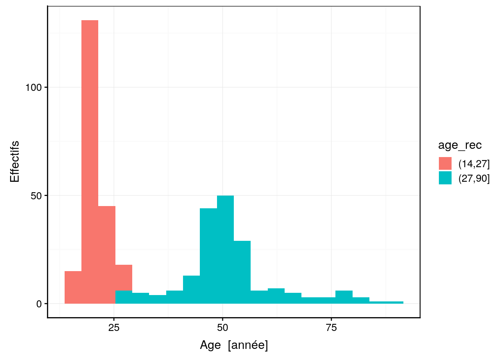

5.3 Conversion de variables
Il est possible de convertir les variables seulement dans un sens : du plus détaillé au moins détaillé, c’est-à-dire, quantitatif continu -> quantitatif discret -> qualitatif ordonné -> qualitatif non ordonné.
5.3.1 Quantitatif continu à discret
R essaye de gommer autant que possible la distinction entre nombres integer et double tous deux rassemblés en numeric. Si besoin, la conversion se fait automatiquement. En pratique, concentrez-vous essentiellement sur les objets numeric pour tout ce qui est quantitatif. Un nombre tel que 1 est considéré par R comme un double par défaut. Si vous vouliez expressément spécifier que c’est un entier, vous pouvez le faire en ajoutant un L majuscule derrière le nombre. Ainsi, 1L est compris par R comme l’entier 1. Encore une fois, cette distinction explicite est rarement nécessaire dans R.
Si vous voulez arrondir des nombres, vous pouvez utiliser la fonction round() avec son argument digits = qui indique le chiffre derrière la virgule qui doit être arrondi (0 par défaut). Pour arrondir vers l’entier le plus proche vers le haut, utilisez floor() et pour le plus proche vers le bas, employez ceiling().
(x <- seq(-1, 1, by = 0.1) + 0.01)# [1] -0.99 -0.89 -0.79 -0.69 -0.59 -0.49 -0.39 -0.29 -0.19 -0.09 0.01
# [12] 0.11 0.21 0.31 0.41 0.51 0.61 0.71 0.81 0.91 1.01round(x)# [1] -1 -1 -1 -1 -1 0 0 0 0 0 0 0 0 0 0 1 1 1 1 1 1round(x, digits = 1)# [1] -1.0 -0.9 -0.8 -0.7 -0.6 -0.5 -0.4 -0.3 -0.2 -0.1 0.0 0.1 0.2 0.3
# [15] 0.4 0.5 0.6 0.7 0.8 0.9 1.0ceiling(x)# [1] 0 0 0 0 0 0 0 0 0 0 1 1 1 1 1 1 1 1 1 1 2floor(x)# [1] -1 -1 -1 -1 -1 -1 -1 -1 -1 -1 0 0 0 0 0 0 0 0 0 0 15.3.2 Quantitatif à qualitatif
Le traitement diffère selon le nombre de valeurs différentes rencontrées dans le jeu de données. Si une variable numérique contient en réalité un petit nombre de valeurs différentes, il suffit de convertir la classe de l’objet de numeric vers factor ou ordered pour que R comprenne que la variable doit être traitée comme une variable qualitative. Un exemple concret l’illustre ci-dessous. Si, par contre, le nombre de valeurs différentes est important (dizaines ou plus) alors il va falloir créer des regroupements. C’est le découpage en classes abordé plus loin.
Voici un jeu de données qui étudie l’allongement des dents chez le cobaye en fonction de la supplémentation alimentaire en acide ascorbique.
tooth <- read("ToothGrowth", package = "datasets", lang = "fr")Le jeu de données comprend 60 observations effectuées sur des cochons d’Inde. Ces derniers reçoivent deux types de suppléments alimentaires : soit du jus d’orange (OJ), soit de la vitamine C (VC). Des lots différents reçoivent des doses différentes d’acide ascorbique via ces suppléments, soit 0.5, 1, ou 2 mg/j. Vous pouvez inspecter ces données rapidement avec la fonction skim().
skimr::skim(tooth)# Skim summary statistics
# n obs: 60
# n variables: 3
#
# ── Variable type:factor ─────────────────────────────────────────────────────────────────────────────────────────
# variable missing complete n n_unique top_counts ordered
# supp 0 60 60 2 OJ: 30, VC: 30, NA: 0 FALSE
#
# ── Variable type:numeric ────────────────────────────────────────────────────────────────────────────────────────
# variable missing complete n mean sd p0 p25 p50 p75 p100
# dose 0 60 60 1.17 0.63 0.5 0.5 1 2 2
# len 0 60 60 18.81 7.65 4.2 13.07 19.25 25.27 33.9
# hist
# ▇▁▇▁▁▁▁▇
# ▃▅▃▅▃▇▂▂La variable dose est encodée sous forme numérique alors que cette dernière ne contient que trois niveaux différents et devra être le plus souvent traitée comme une variable qualitative ordonnée à trois niveaux . Vous devrez donc probablement recoder cette variable en variable facteur.
Ce n’est pas le caractère quantitatif ou qualitatif du mécanisme sous-jacent mesuré qui détermine si la variable est quantitative ou qualitative, mais d’autres critères comme la précision avec laquelle la mesure a été effectuée. Par exemple, un anémomètre mesure la vitesse du vent sous forme de variable quantitative alors qu’une échelle approximative de type vent nul, vent faible, vent moyen, vent fort ou tempête basée sur l’observation des rides ou des vagues à la surface de la mer pourrait éventuellement convenir pour mesurer le même phénomène si une grande précision n’est pas nécessaire. Mais dans ce cas, la variable devra être traitée comme une variable qualitative.
De même, un plan expérimental qui réduit volontairement les valeurs fixées dans une expérience, comme ici les doses journalières d’acide ascorbique, fera aussi basculer la variable en qualitative, et ce, quelle que soit la précision avec laquelle les valeurs sont mesurées par ailleurs. Un découpage en classes aura aussi le même effet de transformer une variable quantitative en variable qualitative ordonnée.
Indiquons à présent explicitement à R que la variable dose doit être considérée comme qualitative :
tooth$dose <- as.factor(tooth$dose)
# Visualisation des données
skimr::skim(tooth)# Skim summary statistics
# n obs: 60
# n variables: 3
#
# ── Variable type:factor ─────────────────────────────────────────────────────────────────────────────────────────
# variable missing complete n n_unique
# dose 0 60 60 3
# supp 0 60 60 2
# top_counts ordered
# 0.5: 20, 1: 20, 2: 20, NA: 0 FALSE
# OJ: 30, VC: 30, NA: 0 FALSE
#
# ── Variable type:numeric ────────────────────────────────────────────────────────────────────────────────────────
# variable missing complete n mean sd p0 p25 p50 p75 p100
# len 0 60 60 18.81 7.65 4.2 13.07 19.25 25.27 33.9
# hist
# ▃▅▃▅▃▇▂▂Vous pouvez (et devez !) cependant aller encore plus loin car la variable est en réalité qualitative ordonnée, et doit être représentée par un objet “facteur ordonné” (ordered) plutôt que factor. Il y a en effet, une progression dans les doses administrées. Lors de la conversion, R considère les différents niveaux par ordre alphabéthique par défaut. Ici cela convient, mais ce n’est pas toujours le cas. Il vaut donc mieux spécifier explicitement l’ordre des niveaux dans l’argument optionnel levels =. Cela donne :
tooth$dose <- ordered(tooth$dose, levels = c(0.5, 1, 2))
# Visualisation des données
skimr::skim(tooth)# Skim summary statistics
# n obs: 60
# n variables: 3
#
# ── Variable type:factor ─────────────────────────────────────────────────────────────────────────────────────────
# variable missing complete n n_unique
# dose 0 60 60 3
# supp 0 60 60 2
# top_counts ordered
# 0.5: 20, 1: 20, 2: 20, NA: 0 TRUE
# OJ: 30, VC: 30, NA: 0 FALSE
#
# ── Variable type:numeric ────────────────────────────────────────────────────────────────────────────────────────
# variable missing complete n mean sd p0 p25 p50 p75 p100
# len 0 60 60 18.81 7.65 4.2 13.07 19.25 25.27 33.9
# hist
# ▃▅▃▅▃▇▂▂Les fonctions as.factor() ou factor() et as.ordered() ou ordered() effectuent cette conversion de character ou numeric vers des objets factor ou ordered. Une variable facteur ordonnée sera alors reconnue comme telle par un ensemble de fonction dans R. Elle ne sera, de ce fait, pas traitée de la même manière qu’une variable facteur non ordonnée, ni même qu’une variable numérique. Soyez bien attentif à l’encodage correct des données dans R avant d’effectuer vos graphiques et vos analyses.
5.3.3 Découpage en classes
La conversion d’une variable quantitative à qualitative doit souvent passer par une réduction des niveaux en rassemblant les valeurs proches dans des classes. Vous avez déjà utilisé de manière implicite le découpage en classes lorsque vous avez réalisé des histogrammes. Si les histogrammes sont bi- ou multimodaux, un découpage se justifie. Par exemple, le jeu de données portant sur la biométrie humaine est typique d’un cas de distribution bimodale. En fait, ce sont des étudiants (ayant tous une vingtaine d’années) qui ont réalisé ces mesures. La plupart ont choisi de s’inclure dans l’échantillon, d’où un premier mode vers une vingtaine d’années. Ensuite, ils ont pu mesurer d’autres personnes, éventuellement dans leur entourage. Beaucoup ont demandé à leurs parents, ce qui résulte en un second mode vers la cinquantaine19. Donc, la distribution bimodale résulte plus de l’échantillonnage en lui-même que d’une réalité démographique ! Cela ne change cependant rien pour l’exercice.
biometry <- read("biometry", package = "BioDataScience", lang = "fr")
chart(data = biometry, ~ age) +
geom_histogram(bins = 20) +
ylab("Effectifs")Les addins de RStudio vont vous permettre de réaliser facilement un découpage du jeu de données en fonction de classes d’âges (bouton Addins -> QUESTIONR -> Numeric range dividing).

Vous spécifiez le découpage voulu dans une boite de dialogue sur base de l’histogramme et lorsque vous cliquez sur le bouton Done, le code R qui effectue ce découpage est inséré dans l’éditeur RStudio à l’endroit du curseur. La nouvelle variable facteur age_rec basée sur le découpage en classes sera ensuite utile pour faire ressortir de l’information supplémentaire en contrastant les individus plus jeunes et ceux plus âgés.
# Instructions obtenues à partir de l'addins
biometry$age_rec <- cut(biometry$age, include.lowest = FALSE, right = TRUE,
breaks = c(14, 27, 90))
# Visualisation de la variable facteur obtenue
chart(biometry, formula = ~ age %fill=% age_rec) +
geom_histogram(bins = 20) +
ylab("Effectifs")
5.3.4 Qualitatif ordonné ou non
Les données qualitatives sont souvent représentées par du texte (nom d’une couleur par exemple) et importées sous forme de chaines de caractère (character) par défaut dans R à partir de la fonction read(). Vous devez les convertir de manière explicite à l’aide de as.factor(), factor(), as.ordered() ou ordered() par la suite. Voici un exemple :
df <- tibble(
color = c("blue", "green", "blue", "red", "green"),
intensity = c("low", "low", "high", "mid", "high"))
df# # A tibble: 5 x 2
# color intensity
# <chr> <chr>
# 1 blue low
# 2 green low
# 3 blue high
# 4 red mid
# 5 green high# Conversion en factor (color) et ordered (intensity)
df$color <- factor(df$color,
levels = c("red", "green", "blue"))
df$intensity <- ordered(df$intensity,
levels = c("low", "mid", "high"))
df# # A tibble: 5 x 2
# color intensity
# <fct> <ord>
# 1 blue low
# 2 green low
# 3 blue high
# 4 red mid
# 5 green high# Information plus détaillée
str(df)# Classes 'tbl_df', 'tbl' and 'data.frame': 5 obs. of 2 variables:
# $ color : Factor w/ 3 levels "red","green",..: 3 2 3 1 2
# $ intensity: Ord.factor w/ 3 levels "low"<"mid"<"high": 1 1 3 2 3skimr::skim(df)# Skim summary statistics
# n obs: 5
# n variables: 2
#
# ── Variable type:factor ─────────────────────────────────────────────────────────────────────────────────────────
# variable missing complete n n_unique top_counts
# color 0 5 5 3 gre: 2, blu: 2, red: 1, NA: 0
# intensity 0 5 5 3 low: 2, hig: 2, mid: 1, NA: 0
# ordered
# FALSE
# TRUE
Les différents niveaux des variables factor ou ordered sont et doivent rester entièrement de votre responsabilité. Certains aspects anciens de R essayent de gérer cela pour vous, mais ces fonctions ou options (StringsAsFactor = par exemple) tendent heureusement à être remplacées par des versions moins assertives. De même, les niveaux ne sont pas réduits lorsque vous filtrez un tableau pour ne retenir que certains niveaux. Vous devez indiquer explicitement ensuite que vous voulez éliminer les niveaux vides du tableau avec la fonction droplevels().
Le jeu de données iris contient des données relatives à trois espèces différentes (table() permet de compter le nombre d’observations pour chaque niveau d’une variable qualitative factor ou ordered) :
iris <- read("iris", package = "datasets", lang = "fr")
table(iris$species)#
# setosa versicolor virginica
# 50 50 50Si nous restreignons le tableau aux 20 premiers individus, cela donne :
iris20 <- iris[1:20, ]
table(iris20$species)#
# setosa versicolor virginica
# 20 0 0Nous voyons que le tableau réduit iris20 ne contient des données que d’une seule espèce. Pourtant table() continue de lister les autres niveaux de la variable. Les niveaux connus sont aussi imprimés avec levels() :
levels(iris20$species)# [1] "setosa" "versicolor" "virginica"Dans le cas ici, nous souhaitons uniquement nous focaliser sur l’espèce I. setosa. Dès lors, l’utilisation de la fonction droplevels() permet de faire disparaître les autres niveaux de la variable species.
iris20$species <- droplevels(iris20$species)
levels(iris20$species)# [1] "setosa"table(iris20$species)#
# setosa
# 20Notez que ceci ne constitue pas un échantillonnage correct par rapport à la population générale du Hainaut pour plusieurs raisons. (1) toutes les tranches d’âges ne sont échantillonnées de manière équivalente pour les raisons évoquées, (2) des liens génétiques existent au sein des familles, ce qui résulte en une non indépendance des observations entre elles, et (3) seule une sous-population constituée de personnes fréquentant l’université et de leur entourage a été échantillonnée. Cependant, dans le cadre de l’exercice, nous accepterons ces biais, tout en étant conscients qu’ils existent.↩